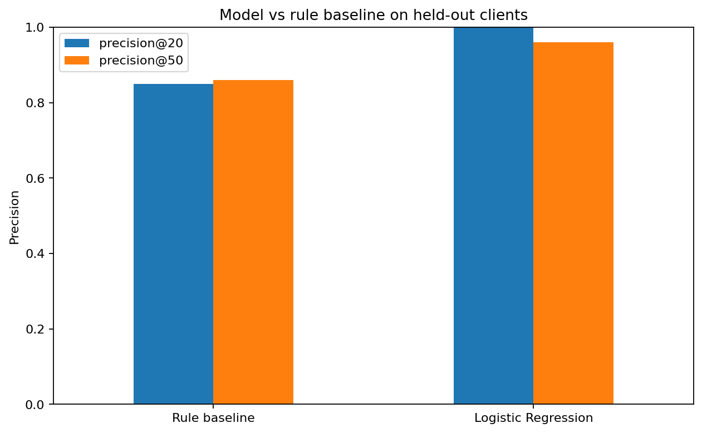
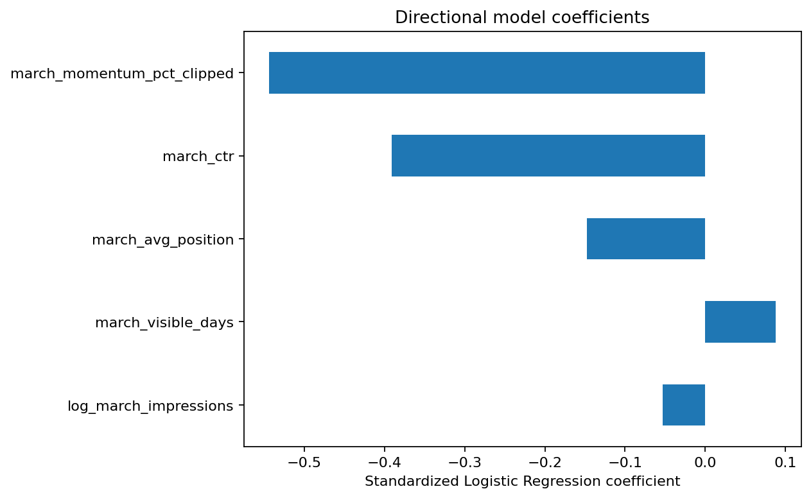

Which content should be reviewed first?
A leakage-aware refresh opportunity ranking built from the FlyRank search warehouse, with a transparent baseline, client-grouped validation, and a human-review action playbook.
Abstract
This study asks which content pages an editor should review first for refresh or search optimization. It uses the FlyRank internship warehouse, whose daily performance fact table contains about 78.8 million pseudonymized rows, with March 2026 as the feature window and April 2026 as the later outcome window. A transparent rule baseline is compared with Logistic Regression on the same client-grouped holdout using Precision@50 as the primary ranking metric. Logistic Regression concentrated more measured decline cases in the top 50 than the transparent rule (0.96 vs 0.86). The result is used as decision-support for human review, not as evidence that refreshing a page causes better search performance.
Introduction / problem statement
Content teams rarely have time to inspect every page. The practical decision is therefore not “which page is bad?” but “which page should an editor inspect first?” This capstone treats that as a ranking problem.
A page is labeled as a measured future decline when its average daily April impressions are more than 20% below its average daily March impressions. The goal is to rank these future-decline cases toward the top using only information available by the end of March.
Data
Source: FlyRank internship warehouse release
v20260703, using
fact_content_daily_performance.
March 2026 supplies the features; April 2026 supplies the later outcome.
Rows with weak measurement coverage are filtered before modeling.
The public paper excludes client names, domains, URLs, keywords, private queries, credentials, GA4 features, existing product flags, and future April metrics from the feature set.
Methodology
Features
- March log impressions
- March CTR
- March impression-weighted average position
- March visible days
- March first-half vs second-half daily-impression momentum
Baseline
The transparent rule ranks visible pages higher when they show one or more simple review cues: negative March momentum, CTR below 0.5%, or average position in the 11–20 striking-distance range. No baseline weight is learned from the label.
Validation and leakage control
Clients are held out as groups with seed 42. No client is shared between train and test. Every feature is measured in March; the outcome is measured in April. Pseudonymous IDs and April outcome columns are never model inputs.
Results
| Method | Base rate | Precision@20 | Precision@50 | ROC-AUC |
|---|---|---|---|---|
| Rule baseline | 0.626 | 0.850 | 0.860 | 0.594 |
| Logistic Regression | 0.626 | 1.000 | 0.960 | 0.682 |

Takeaway: both methods are measured on the same held-out clients. The useful comparison is top-of-queue precision, not a standalone score.

Takeaway: coefficient direction describes how the fitted model used standardized March signals. It is not evidence that changing a feature will cause a search-performance change.
Limitations & honest framing
- This is observational and portfolio-specific; it does not establish causal refresh effects.
- The 20% decline threshold is a practical definition, not a universal SEO boundary.
- Only March-to-April behavior is modeled, so seasonality and longer cycles are not fully represented.
- A grouped-client split tests transfer to unseen clients, but a longer rolling time evaluation would be stronger for deployment.
- The model does not observe editorial intent, SERP changes, seasonality explanations, or planned content operations.
The safest interpretation is: these pages look worth reviewing first because of measured search signals .
Ranked recommendations
The final held-out queue uses Logistic Regression, the method with the stronger Precision@50 result (with ties going to the simpler rule). The row-level queue stays outside the public page; only aggregate action groups are shown here.
| Action | Reason code | Rows | Median score | Median March impressions |
|---|---|---|---|---|
| CTR_REVIEW | page_one_low_ctr | 3,127 | 0.502 | 913 |
| MONITOR | monitor | 3,013 | 0.412 | 877 |
| REFRESH_REVIEW | negative_momentum | 2,781 | 0.605 | 580 |
| RELEVANCE_REVIEW | striking_distance | 1,762 | 0.481 | 1,019 |
- REFRESH_REVIEW: inspect pages with negative recent momentum first.
- CTR_REVIEW: inspect visible page-one content with weak click capture.
- RELEVANCE_REVIEW: inspect pages in positions 11–20 for focused relevance or internal-link review.
- MONITOR: leave lower-priority cases for observation rather than automatic editing.
Human review is mandatory
Before acting, check search intent, seasonality, SERP context, actual content freshness, overlap with other pages, and editorial requirements. Do not automatically publish rewrites, delete pages, redirect URLs, add noindex, change canonicals, make revenue claims, or promise a traffic lift.
Monitoring
Recheck the ranking monthly. Review the model or rule if Precision@50 falls below the current base rate, drops by more than 10 percentage points, the label definition changes, or the feature pipeline changes materially.
Reproducibility
Random seed: 42.
The notebook queries the gated warehouse through DuckDB using a Hugging
Face READ token stored outside the notebook.
Acknowledgments & data credit
Built on the FlyRank ML Internship dataset . Thanks to FlyRank for providing the pseudonymized warehouse and internship research framework.